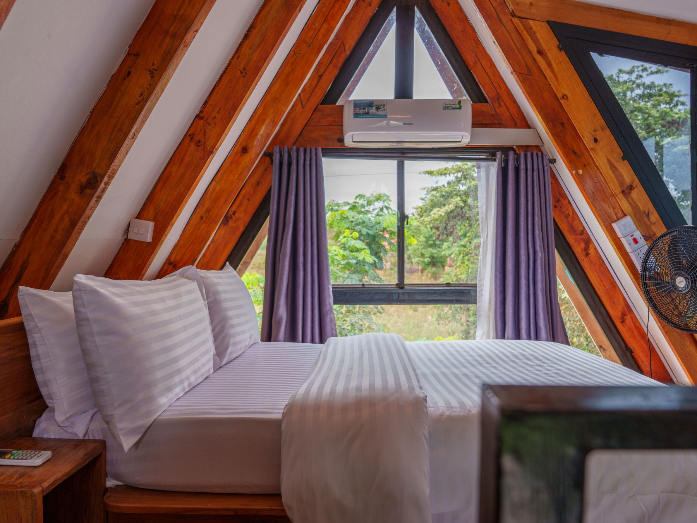
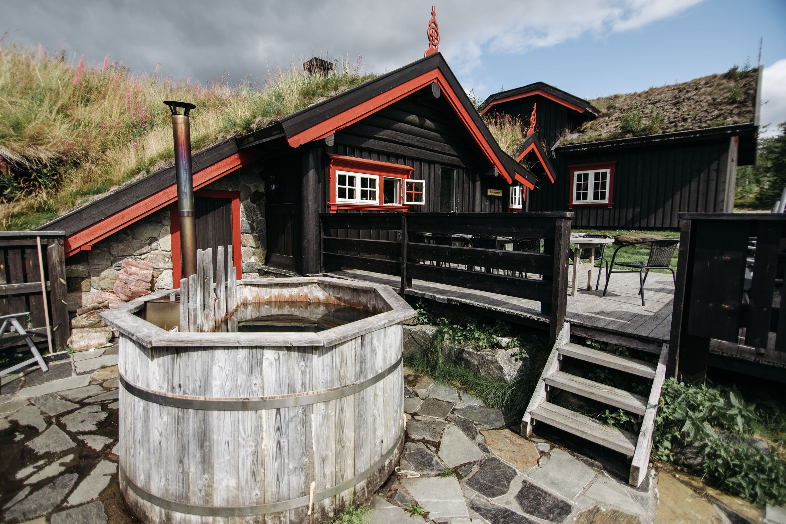
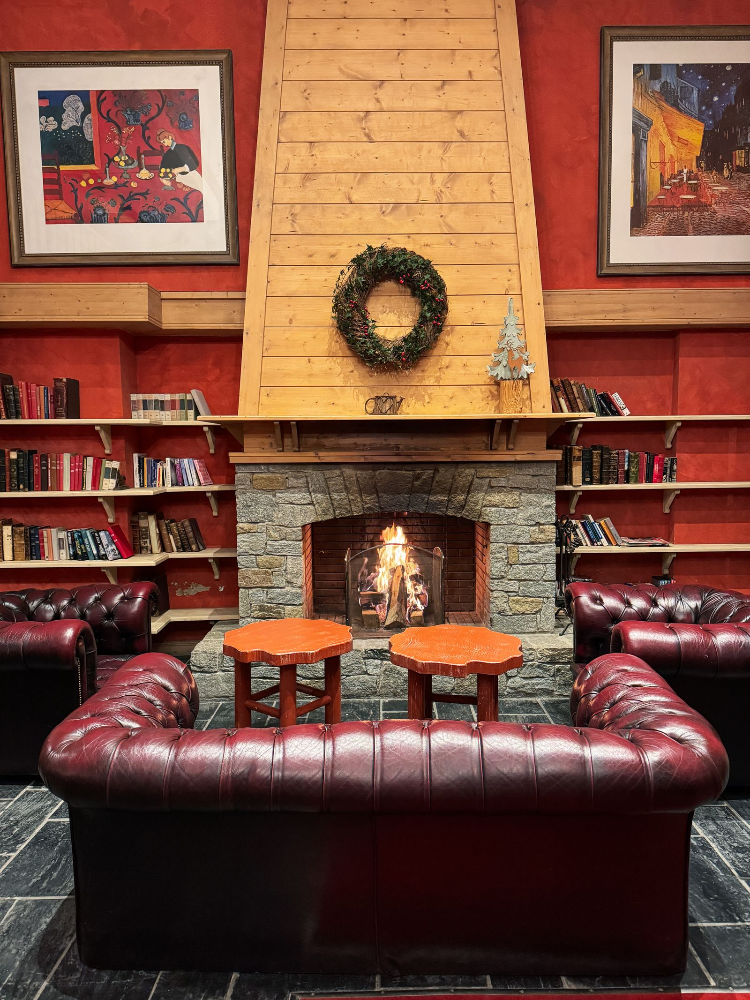
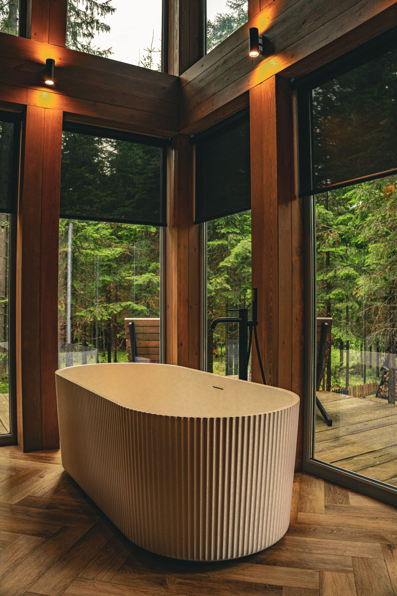
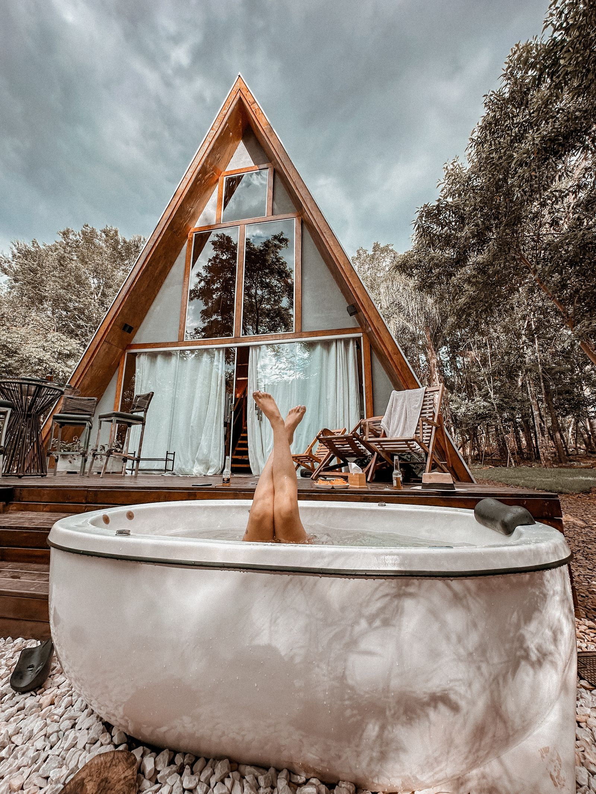
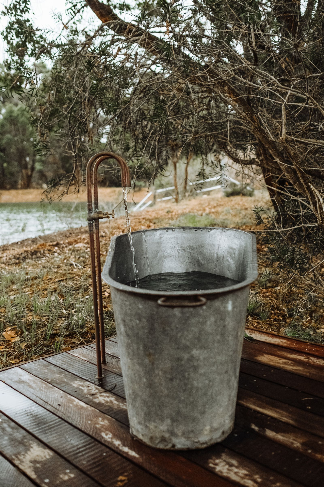
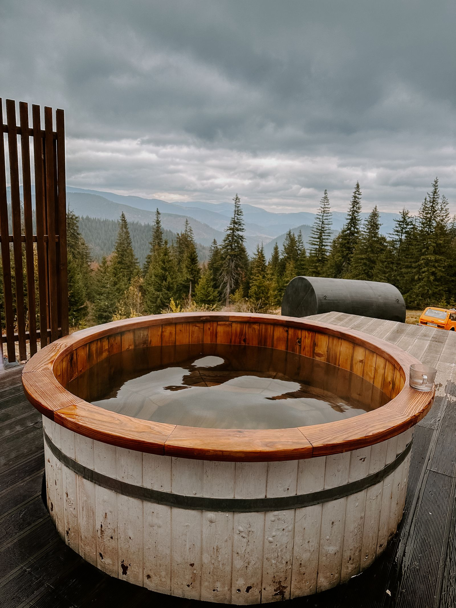
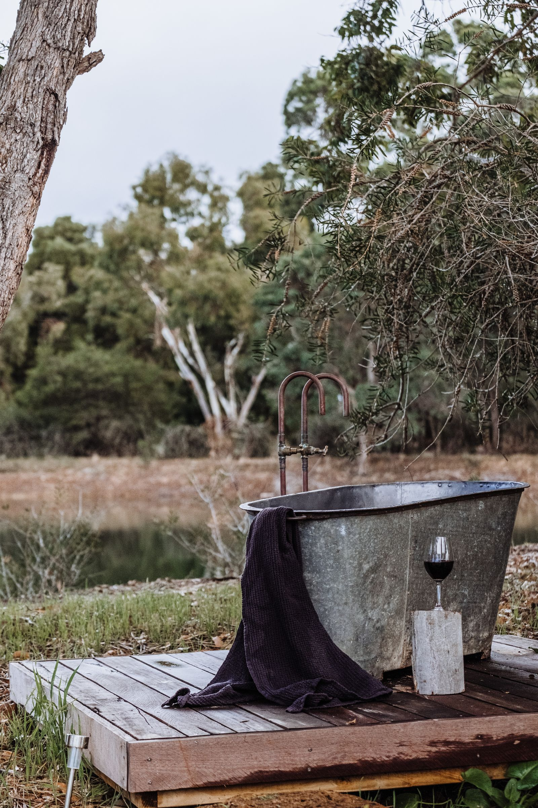
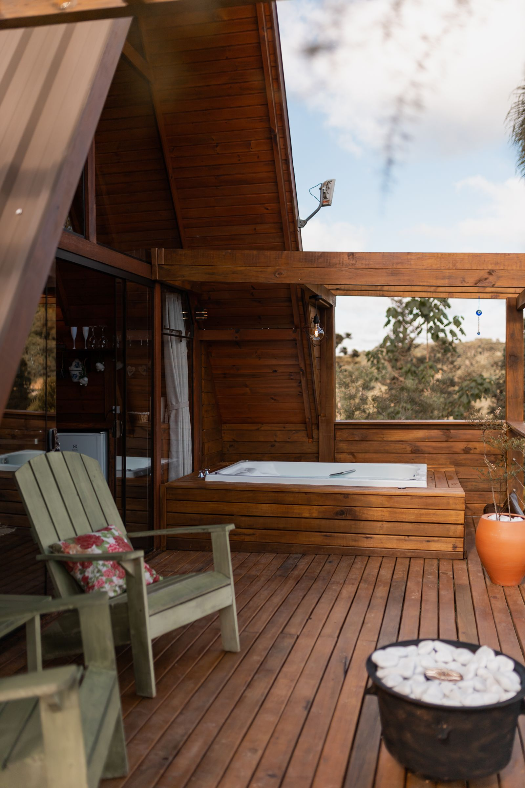
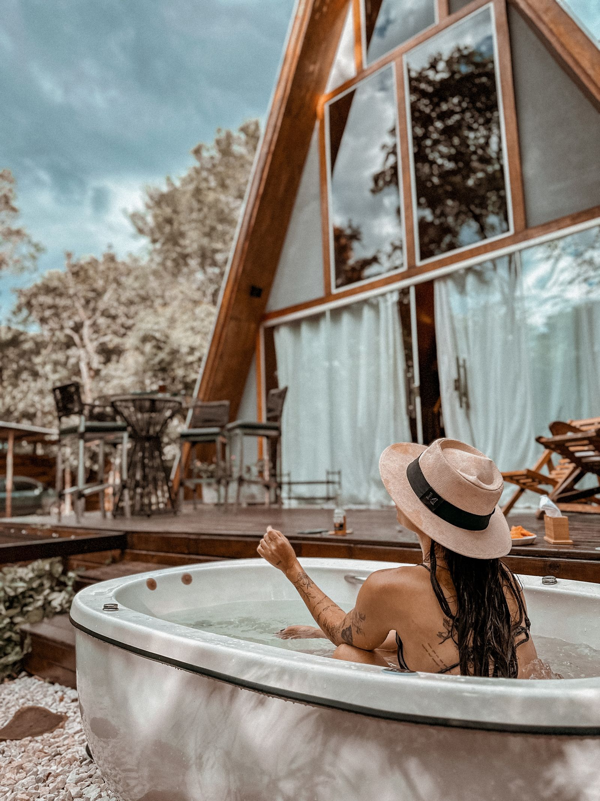

01
Best for
Rain listeners
Somewhere past the last signal
Follow the last light.
Sorrelwake Lodge
The forest has kept your room.

Private rooms · Slow rituals · Wilder air
A fictional hideaway imagined for quiet mornings, firelit evenings and the rare luxury of having nowhere else to be.
Dates are illustrative; this planner does not check real availability.
A made-up place
with a real point of view.
Considered absence
Here, the day is measured differently: steam rising from a cedar bath, a page turned beside the fire, the long pause before rain reaches the roof.
Sorrelwake is a fictional lodge concept designed to show how atmosphere, storytelling and thoughtful interaction can turn a hospitality website into an experience of its own.
Choose your quiet
Explore fictional room concepts and sample rates. Nothing shown here can be reserved.



The treeline, at eye level
A steep-roofed retreat imagined with a wall of glass, a writing ledge and the kind of quiet that makes whispering feel too loud.
For stories after dark
A warm, low-lit room imagined around a hand-built fireplace, deep chairs and a shelf of books with nowhere else to be.
Steam among the ferns
A secluded suite imagined for restorative stays, with a forest-facing bath, softened daylight and absolutely no urgency.
A day with no agenda



Coffee arrives quietly. Mist moves between the trees. The phone can wait.
Follow an invented fern trail, pause at the stream, return when the bread is warm.
A long soak. A small table. The last light caught in a glass.
Small rituals, properly noticed
Every experience shown is an invented portfolio detail, designed to suggest how a real lodge could tell its story.

Drawn before you return from the trail. Fictional, private and wonderfully unhurried.
“We do not fill your day. We protect the space around it.”
Fictional lodge philosophy
Included in every imaginary stay
The table at Sorrelwake
Our entirely fictional kitchen begins with what the imagined landscape offers and ends with a table that asks everyone to stay a little longer.
Sample menu only. These dishes and ingredients are fictional.

A few quiet frames
Stock photography is used illustratively and does not depict a real Sorrelwake Lodge.
A lodge with no coordinates
Sorrelwake began as a creative question: what if a lodge website felt like arriving before the guest ever packed a bag?
The answer is this fictional world—one made from careful pacing, tactile colour, editorial type, real landscape photography and interactions that reward curiosity without getting in the way.
The rare place that understands the difference between having nothing to do and finally having time.
Sample guest reflectionFictional — written for this portfolio concept
Find us nowhere
This address is intentionally fictional. It creates atmosphere without pointing to a real property, road or business.
Sorrelwake Lodge 00 Fernlight Track Fictional Highlands stay@sorrelwake.invalid 000 000 000 000Before you pretend to pack
The most important answer: this is a design demonstration, not an operating lodge.
No. Sorrelwake Lodge is fictional, the planner is a front-end demonstration, and nothing you enter is stored or sent.
No. The address, phone number and .invalid email are deliberately non-operational portfolio placeholders.
The photography shows real cabins and interiors, but it is illustrative stock imagery and does not depict a real Sorrelwake property.
It demonstrates a high-end hospitality website concept: art direction, responsive design, accessible interaction and motion storytelling.
Your room is almost imaginary